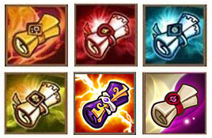
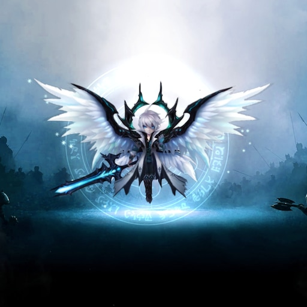

Using magical scrolls you can summon monsters that range from a 1-star grade to a 5-star grade, with 4 and 5 star monsters being the rarest.

My favourite monster in the game is artmaniel. He is an 5* light nat 5 monster which is extremely hard to get. I have played this game more than 2 years and still not got him. To be honest there is better monsters in the game, but he just looks so cool so that why I want him. Hopefully one day I will get him.
